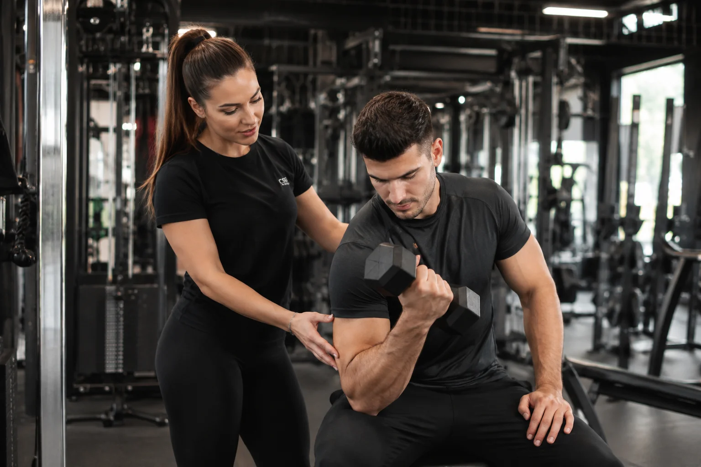

Le marché du coaching sportif à Lyon est dynamique et concurrentiel. Coach personnel, préparateur physique, coach en CrossFit, en running ou en nutrition sportive : si vous n'avez pas de site vitrine, vous laissez des clients potentiels aller directement chez vos concurrents qui en ont un.
Pourquoi les coachs sportifs ont besoin d'un site en 2026
La grande majorité des personnes qui cherchent un coach sportif à Lyon commencent leur recherche sur Google. Elles tapent "coach personnel Lyon", "préparateur physique Lyon 3" ou "coach CrossFit Villeurbanne". Si vous n'apparaissez pas dans ces résultats, vous n'existez pas pour eux.
Instagram peut vous donner de la visibilité, mais il ne remplace pas un site vitrine pour plusieurs raisons. Un client qui vous trouve via Instagram va souvent chercher votre site pour valider votre sérieux avant de vous contacter. Sans site, beaucoup abandonnent à cette étape. Ils préfèrent un concurrent qui a pris le temps de se présenter professionnellement en ligne.
Ce qu'un coach sportif doit mettre sur son site
Pas besoin d'un site complexe. L'objectif est simple : convaincre quelqu'un qui ne vous connaît pas de vous contacter. Pour ça, votre site doit répondre aux questions que tout client potentiel se pose.
Qui êtes-vous et quelle est votre méthode ?
Une page de présentation honnête et directe. Votre parcours, vos certifications, votre approche du coaching. Les gens choisissent un coach autant pour sa personnalité que pour ses compétences. Ne soyez pas générique.
Quelles prestations proposez-vous ?
- Coaching individuel en salle ou à domicile
- Coaching en ligne ou visio
- Préparation physique pour sport spécifique
- Programmes nutrition et rééquilibrage alimentaire
- Cours collectifs ou boot camps
Décrivez chaque prestation clairement avec les modalités pratiques. Où se passe la séance, combien de temps, à quelle fréquence recommandée.
Des témoignages de clients
C'est la partie la plus convaincante de votre site. Des résultats concrets, des transformations, des mots de clients satisfaits. Pas des témoignages inventés, de vrais retours de personnes que vous avez accompagnées. Si vous débutez, même un ou deux suffisent.
Vos tarifs ou une fourchette
Beaucoup de coachs hésitent à afficher leurs prix. C'est une erreur. Les clients qui ne connaissent pas votre tarif avant de vous contacter peuvent se sentir piégés s'il dépasse leur budget. Afficher une fourchette de prix filtre naturellement les personnes qui ne peuvent pas se payer vos services et vous fait gagner du temps.
Un moyen de vous contacter facilement
Formulaire de contact, numéro de téléphone, lien vers votre WhatsApp ou votre Instagram. Plus c'est simple, plus vous recevez de demandes.
Le SEO local, votre meilleur allié
Un site vitrine bien construit peut vous positionner en première page de Google sur des requêtes comme "coach sportif Lyon" ou "coach personnel Lyon 6". Ces requêtes sont cherchées régulièrement par des personnes prêtes à investir dans leur forme physique. Un seul nouveau client régulier obtenu via votre site peut représenter plusieurs centaines d'euros par mois.
Pour bien référencer votre site localement, quelques règles de base : mentionnez votre ville et vos quartiers d'intervention clairement dans le contenu, créez et optimisez votre fiche Google Business, et obtenez des avis clients sur Google. Ce sont les trois leviers les plus efficaces pour un coach sportif indépendant à Lyon.
Ce que votre site doit inspirer dès la première seconde
Dans le coaching sportif, la confiance est tout. Votre site doit inspirer sérieux, expertise et accessibilité dès les premières secondes. Un design propre, des photos professionnelles de vous en action, un message clair sur ce que vous apportez concrètement à vos clients.
Évitez les sites génériques avec des photos de stock. Les gens veulent voir la vraie personne qu'ils vont engager. Une photo de vous, authentique et professionnelle, vaut mieux que dix visuels parfaits sans visage.
Combien ça coûte ?
Un site vitrine professionnel pour un coach sportif à Lyon coûte à partir de 900€ selon le nombre de pages et le niveau de personnalisation. Chaque projet est différent et nous établissons un devis gratuit selon vos besoins. Si vous souhaitez déléguer l'hébergement et la maintenance après livraison, un abonnement optionnel est disponible à partir de 39€ par mois.
Pour remettre ça en perspective : si votre site vous ramène un seul client régulier à 150€ par mois, il est rentabilisé en six mois. Et dans la réalité, un site bien référencé en amène bien plus.